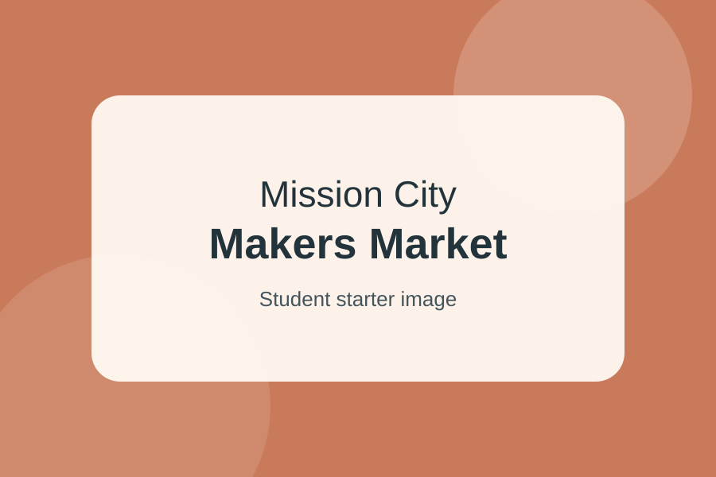
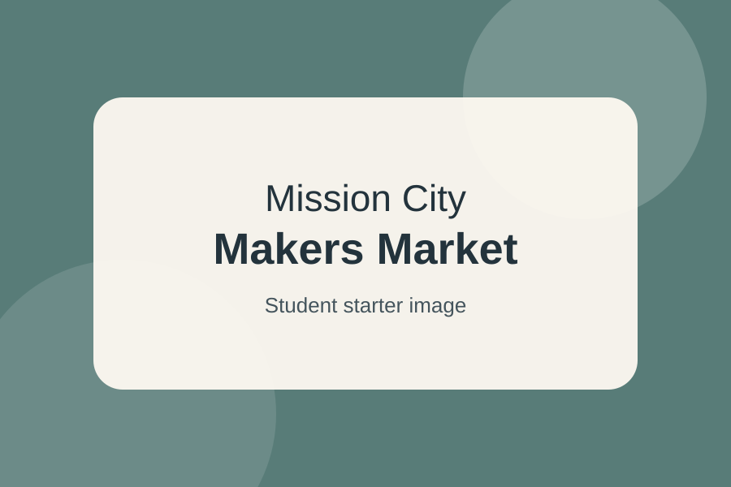
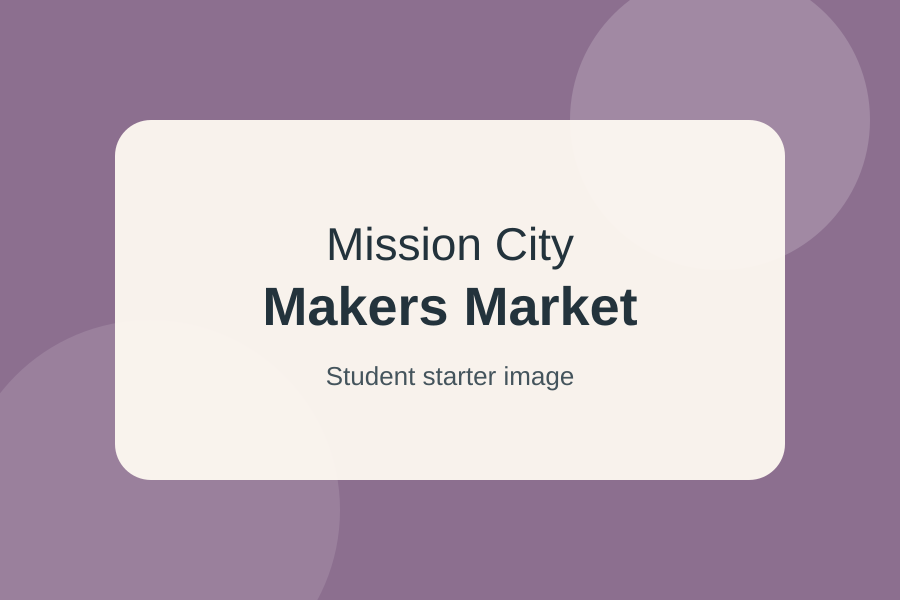
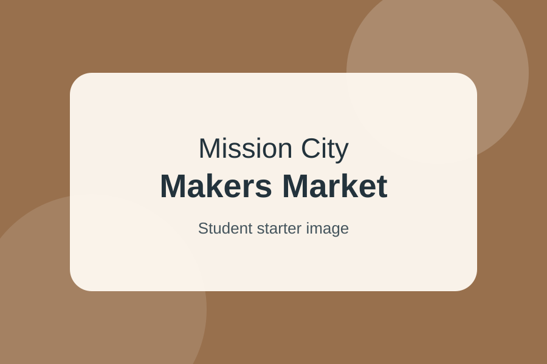

Ceramics
Cielo Clay Studio
Small-batch mugs, bowls, and serving pieces inspired by desert colors and South Texas skies.
Booth: A12
Saturday · South San Antonio
Shop ceramics, prints, textiles, woodcraft, and more from independent South Texas artists. Come for the market, stay for demonstrations, food, and conversation.
Featured Makers
The market includes returning artists and first-time vendors. Use this content as the basis for your Alpine-powered exploration tool.

Ceramics
Small-batch mugs, bowls, and serving pieces inspired by desert colors and South Texas skies.
Booth: A12

Printmaking
Hand-pulled prints featuring native plants, neighborhood architecture, and regional landmarks.
Booth: B04

Textiles
Handwoven scarves, table runners, and small home goods in natural fibers and muted colors.
Booth: C07

Woodcraft
Serving boards, trays, and small household pieces made from reclaimed and locally sourced wood.
Booth: D03
Plan Your Visit
The market is designed for a relaxed Saturday visit. Most guests spend between 60 and 90 minutes browsing.
Visitor Questions
This section contains useful content that could benefit from a reusable interface component.